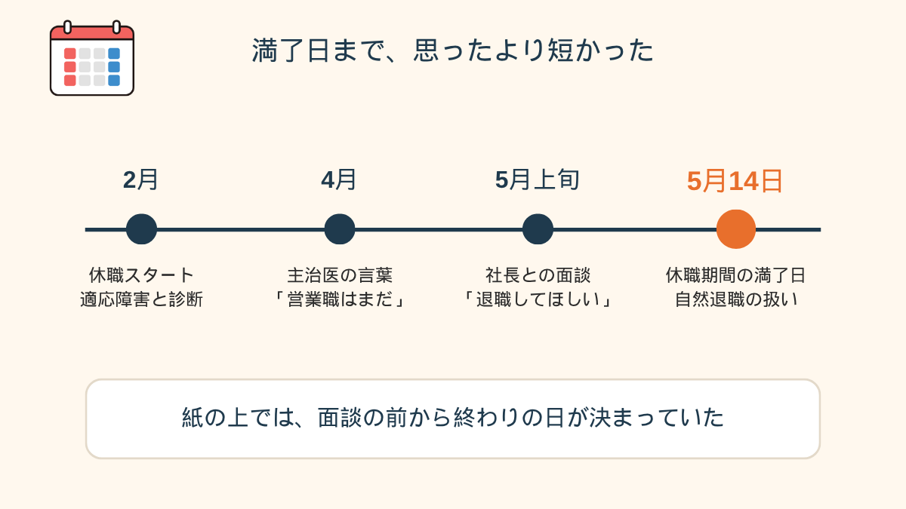
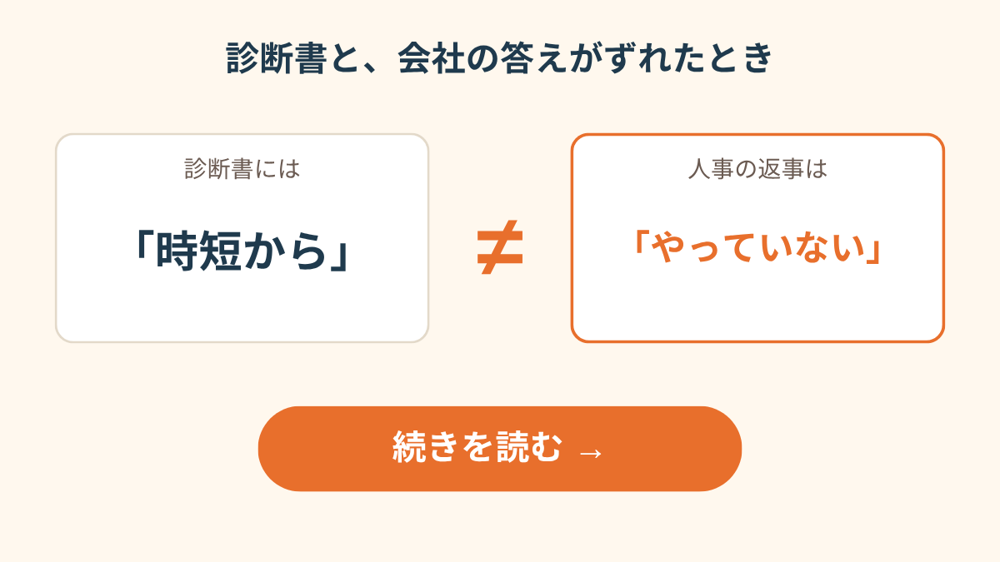
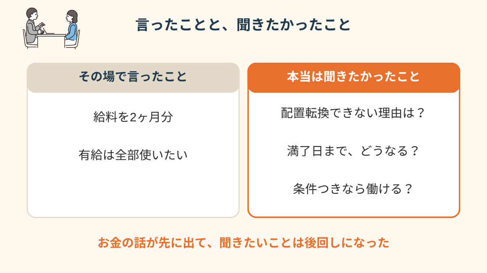
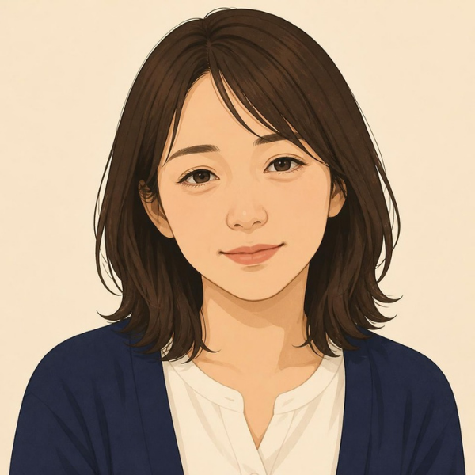
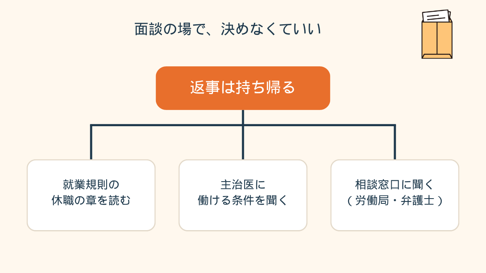
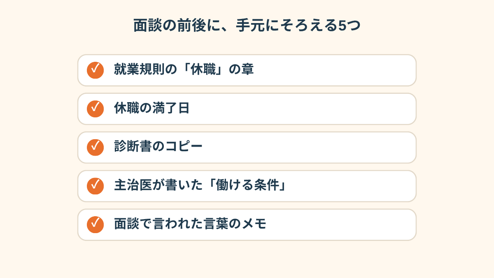
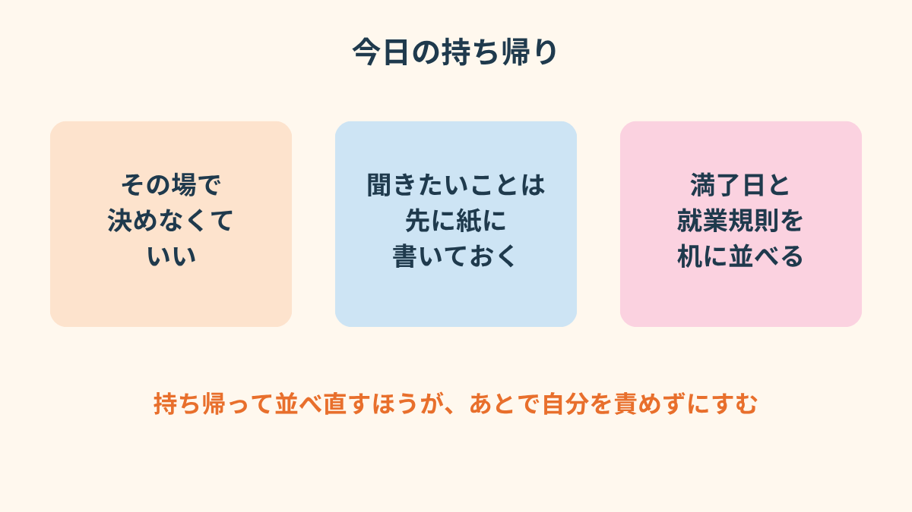

「復職は不可です。配置転換もできないので、退職してほしい」
社長にそう言われたとき、私、「わかりました」って言っちゃいそうになったんです。
その3秒後に口から出たのは、「あの、給料2ヶ月分と、有給の全消化は……」でした。
PR


面談は15分で終わった
29歳、営業職。
去年の9月に入社して、今年の2月に適応障害と言われて休職に入りました。
休職してから、もうすぐ3ヶ月です。
主治医には、少し前にこう言われてました。
「営業職への復職は、まだしないほうがいいと思います」
だから私は、それをそのまま会社に伝えたんです。
診断書と一緒に。
そしたら先週、会社から「面談します」と連絡が来て、行ったら、人事の人はいなくて、社長だけがいた。
社長は、わりと静かな声でした。
「復職は難しいと判断しました。配置転換も、うちの規模だとできない。だから、退職してもらえないかな」
怒鳴られたわけじゃないんです。
むしろ丁寧で、それがなんか、余計にきつかった。
断る隙がない感じというか。

怒鳴られていないのに、足元がすっと抜ける感じ、あると思います。「静かに言われたからこそ固まった」というのは、よく聞く話です。まめざる
面談室の空気は静かで、声も丁寧だった
面談は15分くらいで終わりました。
帰りの電車で、つり革につかまったまま、頭の中は真っ白。
気づいたら降りる駅を一つ過ぎてました。
就業規則を、その日初めてちゃんと読んだ
家に帰って、入社のときにもらったファイルを引っぱり出しました。
就業規則なんて、読んだことなかった。
休職の章を探して、指でなぞりながら読んだら、こう書いてあった。
「休職期間が満了しても復職できない場合は、自然退職とする」
私の休職期間は3ヶ月。
満了日は、5月14日。
つまり、何もしなくても、その日に私は会社の人じゃなくなる、ってこと。
そこで初めて分かったんです。
社長は「お願い」の形で言ってたけど、期間が終わったら辞めることになっている紙の上で、私は話を聞いていたんだって。

満了日から逆算すると、面談の時点で残りの日数はもう少なかった
「就業規則の休職の章、入社してから一度も開いたことがなかったです。満了日を指で数えて、『え、あと◯日しかない』って、そこで急に現実になりました。面談のときは、頭が追いつかなくて」
30代・男性（うつ病で休職・システム開発職）
i
休職の期間や、満了したあとの扱いは会社によってまったく違います。この記事の話は、あくまで一人の方のケースです（2026年10月時点）。自分の会社のルールは、就業規則や人事で確認してください。
ここでもう一つ、頭にひっかかったことがあって。
主治医の言葉と、会社の「できない」が、同じ方向を向いてなかったんです。
主治医は「営業はまだ」と言った。
会社は「配置転換はできない」と言った。
じゃあ、どの条件なら働けるのか、誰も言ってない。
診断書の内容と、会社のできることがかみ合わないのは、実はけっこうあるパターンです。似た話を、こっちの記事にも書いています。まめざる

診断書と会社の答えがずれた人の話を読む →
「円満に」のつもりで、条件を並べてしまった
で、面談の話に戻ります。
社長に退職を言われて、私が最初に思ったのは、「揉めたくない」でした。
営業って、狭い業界なんです。
変な辞め方をしたら、取引先に回るかもしれない。
円満に、きれいに終わらせなきゃ。
そう思って、気づいたら口が動いてました。
「退職は、分かりました。ただ、給料を2ヶ月分と、残ってる有給は全部使わせてください」
言ったあと、顔が熱くなった。
条件を出したら、「辞める」ことに同意したことになるんじゃないか。
でももう言ってしまった。

言ったことと、聞きたかったことが、ほとんど別物だった
相談の一コマ

相談者
お金のことを先に言ったのが、今でも引っかかってて。本当は「なんで配置転換ができないんですか」って聞きたかったのに。
まめざる
聞きたかったことは、あの場で一つも聞けなかったんですね。
相談者
はい。社長の顔を見たら、「円満に」しか頭に出てこなくて。帰ってから、聞きたいことが10個くらい出てきました。
まめざる
10個。いちばん最初に出てきたのは、どれでしたか？
相談者
……「私のこと、一回でも戻す方向で考えてくれました？」です。
「面談のとき、とにかくその場を早く終わらせたくて。『はい』『分かりました』しか言ってなかったと思います。終わってから、あれ、私何に同意したんだっけ、って。メモも何も持っていかなかったのを、すごく後悔しました」
20代・女性（適応障害で休職・販売職）
断られて、退職日だけ延びた
数日後、会社から返事が来ました。
2ヶ月分は、出せません。
そのかわり、退職日を少し先に延ばします、と。
がっかりしたけど、正直、ちょっとほっとした部分もあって。
変な話ですけど、あの条件を出したのは、本当の私の気持ちじゃなかったから。
今は、お金を1ヶ月分にして再度話すか、会社都合の扱いにしてもらえないか聞くか、そこを考えています。
まだ決めてません。
その前に、もう一回、就業規則と満了日と、診断書のコピーを机に並べるところからやり直そうとしてます。
「自分の気持ちが今どうなのか、整理がつかない」というときは、2問だけの
気持ちスキャン診断で一度ことばにしてみる方法もあります。よかったら覗いてみてください。
まめざる

面談の場で決めなくていい。まず持ち帰ってから、3つの確認先に分かれる
!
退職や金銭の条件は、個別の事情や会社の規定で結論が大きく変わります。この記事は法的な判断をするものではありません。迷ったときは、労働局の総合労働相談コーナーや弁護士などの専門家に相談してください（2026年10月時点）。体験は、複数のご相談を組み合わせて再構成しています。

面談の前後に手元にそろえておくと、頭が真っ白でも話の土台が残る
Q. 休職中に会社から「退職してほしい」と言われたら、その場で返事をしないといけませんか？
その場で決めなければならない、とは限らないようです。退職勧奨そのものは、応じる義務のあるものではないと言われています。面談では返事を持ち帰り、就業規則の休職の項目や満了日を確認してから考える人もいます。個別の事情で見方が変わるため、不安なときは労働局の総合労働相談コーナーや弁護士などの専門家に確認してください（2026年10月時点の情報です。最新情報は各機関にご確認ください）。
Q. 休職期間が満了すると、自動的に退職になるのですか？
会社の就業規則に「休職期間が満了しても復職できない場合は自然退職とする」と書かれている例があります。ただ、休職の期間や扱いは会社ごとに違うため、自分の会社の規則で確認することが大切です。分からない部分は、人事や専門家に聞く方法があります（2026年10月時点の情報です）。
Q. 退職の条件として、給与の保障や有給の消化を求めることはできますか？
求めること自体は自由でも、会社が応じるかどうかは別の話で、通らないケースも多いようです。休職中の有給の扱いも会社の規定によって異なります。条件を出す前に、就業規則と満了日、退職日の扱いを確認しておくと、話し合いの前提がそろいます。判断が難しいときは専門家への相談も選択肢です。
Q. 主治医が「元の職種での復職はまだ早い」と言っているときは、どう伝えればいいですか？
診断書や主治医の意見は、会社に復職の可否を伝える材料になります。配置転換が可能かどうかは会社の事情にも左右されるため、「どの条件なら働けそうか」を主治医に具体的に聞き、診断書に書いてもらう方法があります。会社が受け入れるかは別の話ですが、言葉にしておくことで話が進みやすくなる場合があります。

その場の返事より、持ち帰って並べ直すほうが、あとで自分を責めずにすむ
PR


まずは無料で相談してみる
面談で言われたことが頭から離れないとき。うまく話せなくても大丈夫です。一緒に整理していきましょう。
無料相談はこちら
この記事に、聞いてみたいことはありますか？
「自分の場合はどうなんだろう」と思ったことを、気軽に書いてみてください。いただいた質問は個別にお返事したうえで、匿名で記事にすることがあります。
お
おのざる
mimemime代表。就労支援の現場経験をもとに、障がいのある方の働く不安に寄り添う記事を執筆。